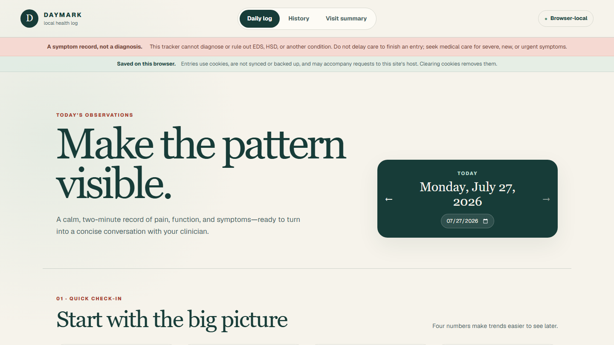

Daymark
2026Browser-local symptom journal for recording pain, function, body-system observations, contextual tags, notes, and healthcare-visit summaries.
Daymark is a Vite, React, and TypeScript app with first-party cookie persistence, Daily log, History, and Visit summary views, CSV export, print-ready reports, explicit missing-day context, and neutral non-diagnostic health language.
Live Demo